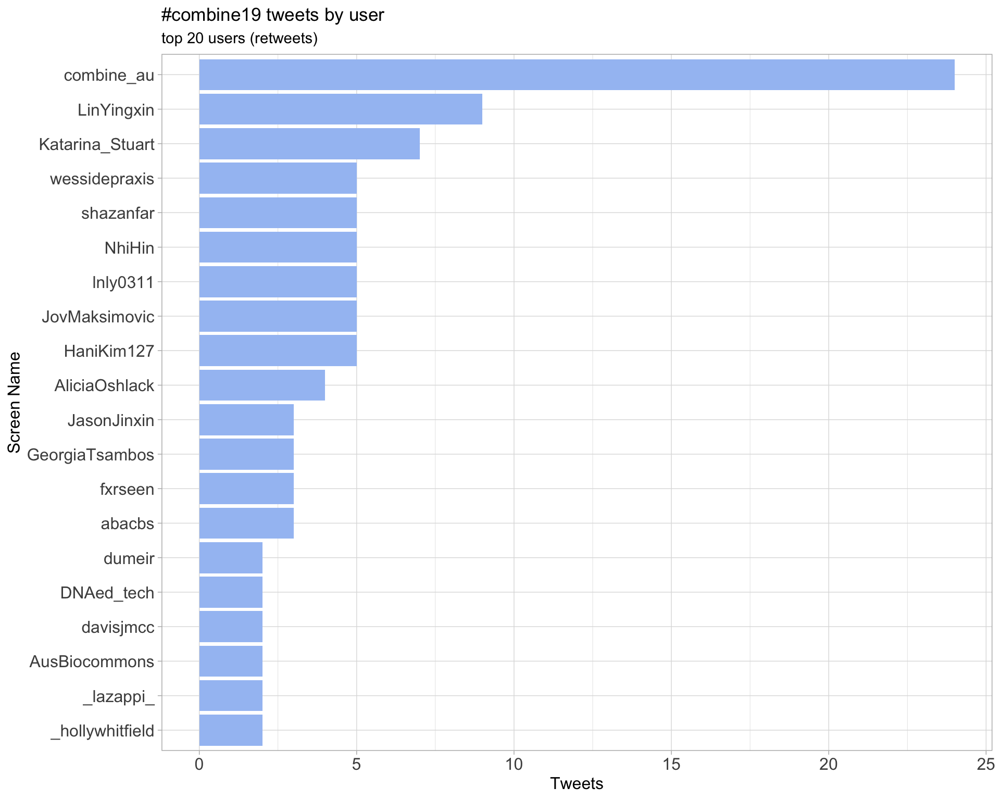
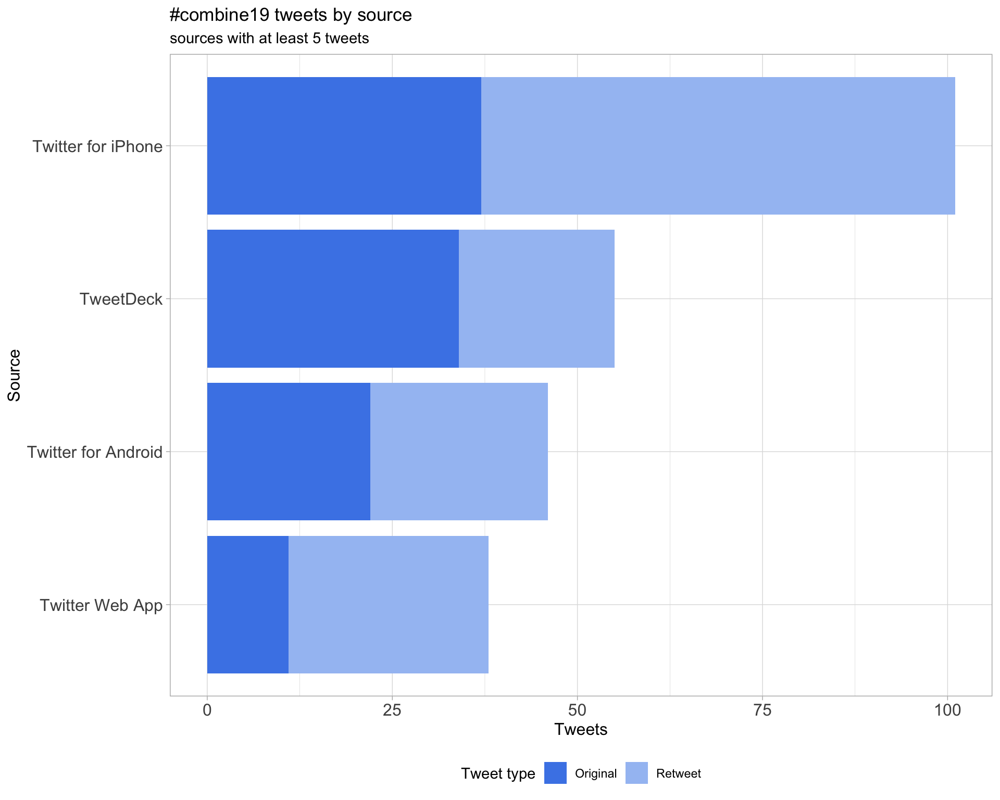
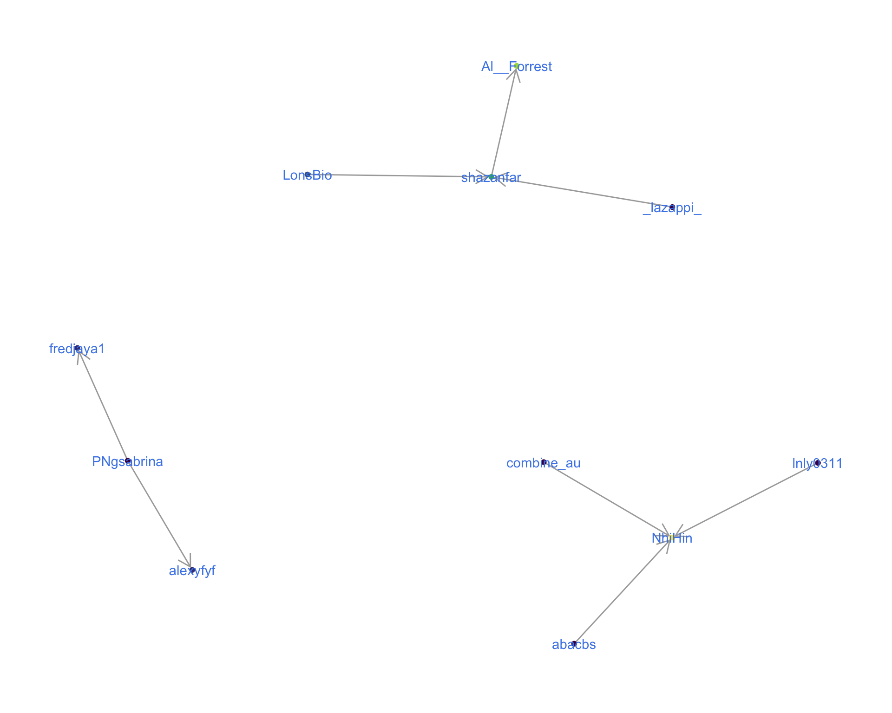
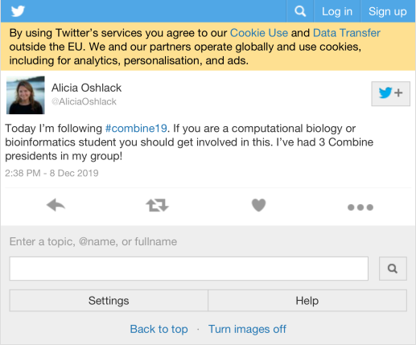
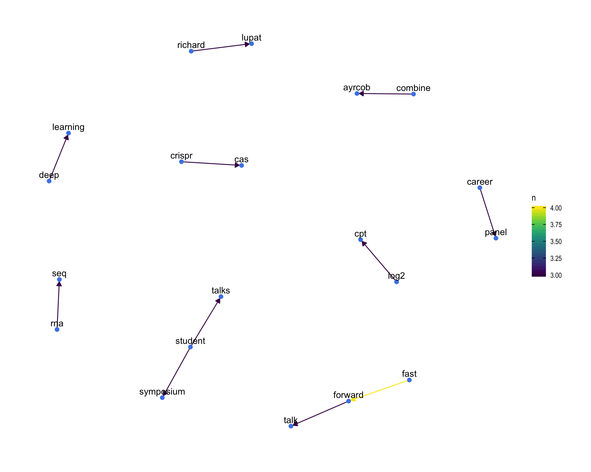
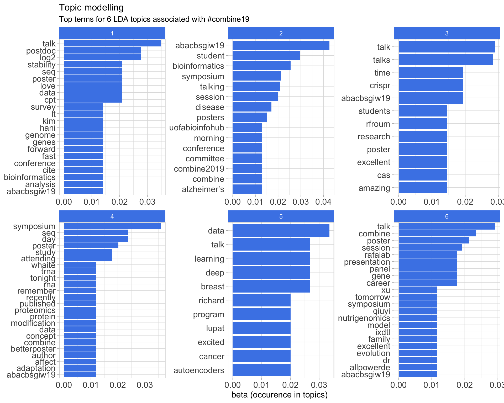

COMBINE19
COMBINE Symposium 2019
2019-12-09 09:24:12
Parameters
| Parameter | Value |
|---|---|
| hashtag | #combine19 |
| start_day | 2019-12-09 |
| end_day | 2019-12-09 |
| timezone | Australia/Sydney |
| theme | theme_light |
| accent | #4a86e8 |
| accent2 | #A4C2F3 |
| kcore | 2 |
| topics_k | 6 |
| bigram_filter | 3 |
| fixed | FALSE |
| seed | 1 |
1 Introduction
An analysis of tweets from the #combine19 hashtag for the COMBINE Symposium 2019.
A total of 208 tweets from 62 users were collected using the rtweet R package.
2 Timeline
2.1 Tweets by day
2.2 Tweets by day and time
Filtered for dates 2019-12-09 - 2019-12-09 in the Australia/Sydney timezone.

3 Users
3.1 Top tweeters
Overall

Original

Retweets

3.2 Retweet proportion

3.3 Top tweeters timeline
3.4 Top tweeters by day
Overall
Day 1
Original
Day 1
Retweets
Day 1

4 Sources

5 Networks
5.1 Replies
The “replies network”, composed from users who reply directly to one another, coloured by PageRank.

5.2 Mentions
The “mentions network”, where users mention other users in their tweets. Filtered for a k-core of 2. Node colour and size adjusted according to PageRank score.
6 Tweet types
6.1 Retweets
Proportion
Count
Top 10
| screen_name | text | retweet_count |
|---|---|---|
| AliciaOshlack | Today I’m following #combine19. If you are a computational biology or bioinformatics student you should get involved in this. I’ve had 3 Combine presidents in my group! | 9 |
| combine_au | @NhiHin use zebra fish to model familial Alzheimer’s disease and demonstrate the alteration in iron homeostasis by comparing differences in the transcriptome of iron response element gene sets. @combine_au #combine19 https://t.co/iy2OCf9ess | 5 |
| combine_au | Our fabulous symposium organisers @Katarina_Stuart @LinYingxin kicking our day off! #combine19 https://t.co/ynboNgpTht | 5 |
| YiwenWang_Eva | Do you wanna to simulate more scenarios in gene family evolution? Then you cannot miss the talk of Qiuyi. He introduces a new model called IxDTL. Well done! Qiuyi! #COMBINE19 @QiuyiLi2 @MelbIntGen https://t.co/OK3AU73Z93 | 5 |
| LinYingxin | Ready for the three-day bioinformatics and computational biology conference in Sydney? üë©‚Äçüíªüßë‚Äçüíª 14 hours left for COMBINE/AYRCOB student symposium 2019 registration open! üòé#ABACBSGIW19 #combine19 #abacbs @combine_au @abacbs https://t.co/AoJ8uvJwAK | 4 |
| LeganaFingerhut | Presenting my poster at #COMBINE19! Come talk to me about antimicrobial peptides, microbiomes, machine learning, genome-wide predictions, R, or R package development! @combine_au @abacbs spot 41! https://t.co/zx8ZKhAAAZ | 4 |
| askemdarling | Awesome to hear @rfroum talk about her Masters research project on CRISPR-CAS activity in Kp #COMBINE19 https://t.co/4eg6TDoXOi | 4 |
| AusBiocommons | We’re so pleased to be sponsoring and attending the @combine_au Symposium in Sydney today! #COMBINE19 https://t.co/ydE8RUc2Yd | 4 |
| combine_au |
If you didn’t grab a paper program for the symposium today the full one can be found online #COMBINE19 https://t.co/t5QWXqJZLG |
3 |
| combine_au | Thanks @HaniKim127 for getting out from behind the twitter account to present on CiteFuse! #COMBINE19 https://t.co/2fD8ljfAOm | 3 |
Most retweeted

6.2 Likes
Proportion

Count
Top 10
| screen_name | text | favorite_count |
|---|---|---|
| YiwenWang_Eva | Come to see me at Poster 49 to talk about multivariate methods dealing with batch effects in microbiome data #COMBINE19 https://t.co/c5Quo3dCOf | 22 |
| PatSullivann |
I really enjoyed presenting my poster on identifying splice-altering variants at #BioInfoSummer Next up: #COMBINE19 https://t.co/nVt1PoENZZ |
22 |
| AliciaOshlack | Today I’m following #combine19. If you are a computational biology or bioinformatics student you should get involved in this. I’ve had 3 Combine presidents in my group! | 20 |
| LinYingxin | Ready for the three-day bioinformatics and computational biology conference in Sydney? üë©‚Äçüíªüßë‚Äçüíª 14 hours left for COMBINE/AYRCOB student symposium 2019 registration open! üòé#ABACBSGIW19 #combine19 #abacbs @combine_au @abacbs https://t.co/AoJ8uvJwAK | 16 |
| YiwenWang_Eva | Thanks for the chance to present my work #combine19 My poster is packed up and ready for ABACBS. üòâ#ABACBSGIW19 https://t.co/i3l4anaUXH | 16 |
| LeganaFingerhut | Presenting my poster at #COMBINE19! Come talk to me about antimicrobial peptides, microbiomes, machine learning, genome-wide predictions, R, or R package development! @combine_au @abacbs spot 41! https://t.co/zx8ZKhAAAZ | 16 |
| askemdarling | First research poster presentation done ✅ #COMBINE19 https://t.co/JUo0bbZh4r | 15 |
| fredjaya1 | Who else is excited for a massive week of bioinformatics? The first of presentation I‚Äôll be giving will be a fast forward talk on frogs at #COMBINE19, come and check it out! üê∏üߨ #ABACBSGIW19 https://t.co/Y6xjqNKPxY | 13 |
| askemdarling | Awesome to hear @rfroum talk about her Masters research project on CRISPR-CAS activity in Kp #COMBINE19 https://t.co/4eg6TDoXOi | 12 |
| AusBiocommons | We’re so pleased to be sponsoring and attending the @combine_au Symposium in Sydney today! #COMBINE19 https://t.co/ydE8RUc2Yd | 12 |
Most likes

6.3 Quotes
Proportion
Count
Top 10
| screen_name | text | quote_count |
|---|---|---|
| shazanfar |
Added, thanks Andrew!! #BioInfoSummer OR @bioinfosummer OR #biocasia OR #abacbs OR @abacbs OR #GIWABACBS2019 OR #abacbs2019 OR #abacbs19 OR #COMBINE19 OR @combine_au OR #COMBINE2019 https://t.co/GcPXYQY7ML |
1 |
| HaniKim127 | Excited because today I will present CiteFuse for the second time! But more excited by a tweet from @DaniKim_02 (yes our names rhyme) #combine19 @combine_au #twinsdoresearch #CPC https://t.co/sCVtJO8z3o | 1 |
| combine_au | Fantastic! This year COMBINE is trialling a live streaming of the symposium. We hope that everyone can attend and benefit from the presentations. #combine19 @combine_au #LiveStreaming https://t.co/BeDs6eQvRi | 1 |
Most quoted
7 Media
Proportion

Top 10
| screen_name | text | favorite_count |
|---|---|---|
| YiwenWang_Eva | Come to see me at Poster 49 to talk about multivariate methods dealing with batch effects in microbiome data #COMBINE19 https://t.co/c5Quo3dCOf | 22 |
| PatSullivann |
I really enjoyed presenting my poster on identifying splice-altering variants at #BioInfoSummer Next up: #COMBINE19 https://t.co/nVt1PoENZZ |
22 |
| LinYingxin | Ready for the three-day bioinformatics and computational biology conference in Sydney? üë©‚Äçüíªüßë‚Äçüíª 14 hours left for COMBINE/AYRCOB student symposium 2019 registration open! üòé#ABACBSGIW19 #combine19 #abacbs @combine_au @abacbs https://t.co/AoJ8uvJwAK | 16 |
| YiwenWang_Eva | Thanks for the chance to present my work #combine19 My poster is packed up and ready for ABACBS. üòâ#ABACBSGIW19 https://t.co/i3l4anaUXH | 16 |
| LeganaFingerhut | Presenting my poster at #COMBINE19! Come talk to me about antimicrobial peptides, microbiomes, machine learning, genome-wide predictions, R, or R package development! @combine_au @abacbs spot 41! https://t.co/zx8ZKhAAAZ | 16 |
| askemdarling | First research poster presentation done ✅ #COMBINE19 https://t.co/JUo0bbZh4r | 15 |
| fredjaya1 | Who else is excited for a massive week of bioinformatics? The first of presentation I‚Äôll be giving will be a fast forward talk on frogs at #COMBINE19, come and check it out! üê∏üߨ #ABACBSGIW19 https://t.co/Y6xjqNKPxY | 13 |
| askemdarling | Awesome to hear @rfroum talk about her Masters research project on CRISPR-CAS activity in Kp #COMBINE19 https://t.co/4eg6TDoXOi | 12 |
| AusBiocommons | We’re so pleased to be sponsoring and attending the @combine_au Symposium in Sydney today! #COMBINE19 https://t.co/ydE8RUc2Yd | 12 |
| samleechch | Very good representation of what autoencoders want to do from PAO’s talk on deep learning over @nanopore signal data #combine19 https://t.co/N41mYIrP5F | 12 |
7.1 Most liked image

8 Tweet text
8.1 Word cloud
The top 100 words used 3 or more times.

8.2 Bigram graph
Words that were tweeted next to each other at least 3 times.

8.3 Topic modelling
Top 10 words associated with 6 topics identified by LDA.

8.3.1 Representative tweets
Most representative tweets for each topic
Topic 1
| screen_name | text | gamma |
|---|---|---|
| combine_au | Machine learning on breast cancer genomic data. Richard Lupat demonstrates the use of deep learning based models to classify breast cabcer cell types. @combine_au #combine19 @PeterMacCC https://t.co/52GQDuq5Hg | 0.9939689 |
| YiwenWang_Eva | Do you wanna to simulate more scenarios in gene family evolution? Then you cannot miss the talk of Qiuyi. He introduces a new model called IxDTL. Well done! Qiuyi! #COMBINE19 @QiuyiLi2 @MelbIntGen https://t.co/OK3AU73Z93 | 0.9929137 |
| LonsBio | Great talk by Richard Lupat from @PeterMacRes on using autoencoders to find relevant features for further model building to classify breast cancers from high dimensional genomic data #combine19 | 0.9919779 |
| abacbs | Richard Lupat (Peter MacCullum Cancer Centre) talking about Deep Learning for feature etraction in Breast Cancer data #combine19 | 0.9914108 |
| LeganaFingerhut | Presenting my poster at #COMBINE19! Come talk to me about antimicrobial peptides, microbiomes, machine learning, genome-wide predictions, R, or R package development! @combine_au @abacbs spot 41! https://t.co/zx8ZKhAAAZ | 0.9914108 |
| abacbs | We also had a very cool talk from Marina Reixachs (ANU) on ribosomal profiling on isoforms. Always hard being the first talk after lunch #combine19 #sofull | 0.9899965 |
| samleechch | Very good representation of what autoencoders want to do from PAO’s talk on deep learning over @nanopore signal data #combine19 https://t.co/N41mYIrP5F | 0.9880245 |
| abacbs | Xiangnan Xu (USyd) rounding off the session with his talk on Nutrigenomics data analysis #combine19 | 0.9867151 |
| PNgsabrina | @alexyfyf from @MonashBioinfo on 9-gene score (for this Christmas? üéÑ) #COMBINE19 https://t.co/5inaraF8zo | 0.9802303 |
| lazappi | @shazanfar @Bioinfosummer @abacbs You‚Äôre missing #COMBINE19 üòú | 0.8939600 |
Topic 2
| screen_name | text | gamma |
|---|---|---|
| LonsBio | Great start to #combine19 with @rfroum characterising whether CRISPR-Cas is active in resistance Klebsiella pneumoniae. No time for questions, but we have Twitter! Any known limitations in the CRISPRCasFinder (e.g. FPs or FNs) when locating the cassettes? | 0.9936539 |
| LonsBio | #COMBINE19 awards for posters, lightning talks and talks! Nice having the judges presenting the prizes. Unable to split a few of the winners, multiple prizes! #ABACBSGIW19 | 0.9914108 |
| abacbs | Alassandra Whaite from the University of the Sunshine Coast presenting proteomic work on natural protein fibers from molluscs and spiders. Facinating area of study! #combine19 | 0.9907574 |
| askemdarling | Awesome to hear @rfroum talk about her Masters research project on CRISPR-CAS activity in Kp #COMBINE19 https://t.co/4eg6TDoXOi | 0.9899965 |
| combine_au | The first speaker of #combine19, @rfroum gives us insight into the diversity of CRISPR activity in Klebsiella pneumoniae genome. Thank you for the talk! https://t.co/lUSd7BCJ7s | 0.9890990 |
| Katarina_Stuart | Roni Froumine kicking off #COMBINE19 with an excellent talk on antimicrobial resistance and CRISPR-Cas. https://t.co/JHL0z0S0sc | 0.9880245 |
| Katarina_Stuart | Alessandra Whaite wow-ing us all with her spider and oyster wrangling skills #COMBINE19 https://t.co/Pe2imcZhfZ | 0.9867151 |
| rhysnewell | First time presenting at #COMBINE19 and first time publicly talking about Lorikeet üò¨ nerve-wracking but exhilarating ü¶úüòä https://t.co/AkxWWpYQYF | 0.9867151 |
| shazanfar |
Added, thanks Andrew!! #BioInfoSummer OR @bioinfosummer OR #biocasia OR #abacbs OR @abacbs OR #GIWABACBS2019 OR #abacbs2019 OR #abacbs19 OR #COMBINE19 OR @combine_au OR #COMBINE2019 https://t.co/GcPXYQY7ML |
0.9850842 |
| combine_au | Thanks @HaniKim127 for getting out from behind the twitter account to present on CiteFuse! #COMBINE19 https://t.co/2fD8ljfAOm | 0.9706931 |
Topic 3
| screen_name | text | gamma |
|---|---|---|
| combine_au | @NhiHin use zebra fish to model familial Alzheimer’s disease and demonstrate the alteration in iron homeostasis by comparing differences in the transcriptome of iron response element gene sets. @combine_au #combine19 https://t.co/iy2OCf9ess | 0.9936539 |
| shazanfar |
Congrats to the excellent organisers of #combine19 & all @combine_au members & exec for a fantastic year of “for students, by students” events. 2020 exec nominations are now open, I found it incredibly rewarding & highly recommend! #ABACBSGIW19 @abacbs https://t.co/REEA4BjOuU |
0.9929137 |
| abacbs | Gerry Tonkin-Hill from the Sanger Centre (UK) presenting a cautionary tale of errors and contamination in bacterial Pangenome analyses #combine19 | 0.9907574 |
| abacbs | Up next is Maria Satti (National Institute of Genetics, Japan) talking about comparative genomics of Bifidobacterium from Egyptian fuit bats #combine19 | 0.9907574 |
| HaniKim127 | Excited because today I will present CiteFuse for the second time! But more excited by a tweet from @DaniKim_02 (yes our names rhyme) #combine19 @combine_au #twinsdoresearch #CPC https://t.co/sCVtJO8z3o | 0.9890990 |
| abacbs | Ahmed Zeeshan Siddiqui (UNSW) is now talking about tissue-specific cirRNAs in normal healthy humans. #combine19 | 0.9890990 |
| IgnatiusPang | GIW/ABACBS Conference dinner still open until end of tonight. Please speak to registrations desk if you want to get a ticket. #ABACBSGIW19 #COMBINE19 | 0.9867151 |
| combine_au |
If you didn’t grab a paper program for the symposium today the full one can be found online #COMBINE19 https://t.co/t5QWXqJZLG |
0.9850842 |
| combine_au | Today #combine19 morning is all about bacterial genomes! Thank you Maria Satti for coming from Japan to present! https://t.co/mDfQWRnRNp | 0.9850842 |
| lnly0311 | @NhiHin is talking about Alzheimer’s research in zebra fish model at #combine19 https://t.co/vVdPVaTFsg | 0.9829969 |
Topic 4
| screen_name | text | gamma |
|---|---|---|
| dumeir | Started #COMBINE19 with an excellent presentation by my friend @rfroum and ended with an insightful career panel by @rafalab, @MarcelDinger, Dr Denis Bauer and Dr Emily Wong. Thank you @combine_au for allowing me to be an abstract reviewer and see you tomorrow for #ABACBSGIW19! | 0.9942541 |
| LinYingxin | Ready for the three-day bioinformatics and computational biology conference in Sydney? üë©‚Äçüíªüßë‚Äçüíª 14 hours left for COMBINE/AYRCOB student symposium 2019 registration open! üòé#ABACBSGIW19 #combine19 #abacbs @combine_au @abacbs https://t.co/AoJ8uvJwAK | 0.9924748 |
| LonsBio | @combine_au This is arguably the 10th @combine_au symposium - the existence of the second is hotly debated amongst COMBINE historians, but a truce has been declared by accepting there could be an off by one error! From humble beginnings… #combine19 https://t.co/4prr6tKHZ7 | 0.9919779 |
| LonsBio | That’s two #COMBINE19 talks so far today mentioning autoencoders, will have to pick the brains of @rlupat and @pabloacera91 at lunch time - seems a very useful technique for biological applications | 0.9899965 |
| LinYingxin | COMBINE/AYRCOB symposium career panel starts now ü§© panelists include @rafalab @MarcelDinger @allPowerde @em6wong #COMBINE19 https://t.co/NHfgwQet5o | 0.9899965 |
| AliciaOshlack | Today I’m following #combine19. If you are a computational biology or bioinformatics student you should get involved in this. I’ve had 3 Combine presidents in my group! | 0.9867151 |
| Katarina_Stuart | Xiqngnan Xu closing off the COMBINE 2019 student talks with his presentation on nutrigenomics #COMBINE19 https://t.co/PyRnHu0vF3 | 0.9867151 |
| shazanfar | @Al__Forrest @Bioinfosummer @abacbs Always happy to help üòäüòä add the combine tags too! #combine19 #combine2019 @combine_au | 0.9802303 |
| combine_au | Our fabulous symposium organisers @Katarina_Stuart @LinYingxin kicking our day off! #combine19 https://t.co/ynboNgpTht | 0.9802303 |
| combine_au | Remember to use our hashtag #COMBINE19 to tweet along with everything happening at the symposium today! | 0.9763884 |
| abacbs | Check out Hani’s preprint on CITEfuse (https://t.co/lrOuE2I6zZ) #combine19 | 0.9763884 |
| PNgsabrina | Beautiful overview of CiteFuse by @HaniKim127 at her #COMBINE19 presentation! https://t.co/3RWOP6JQje | 0.9763884 |
Topic 5
| screen_name | text | gamma |
|---|---|---|
| JovMaksimovic | For everyone who will be attending the @abacbs post doc event at 6pm tonight in the beer garden at the Alfred Hotel (https://t.co/qzQ8iLSUtt) there will be a bar tab! Enjoy the üçª and say ‚ÄúHi!‚Äù to Ignatius Pang who has kindly stepped in to host in my stead #combine19 #ABACBSGIW19 | 0.9942541 |
| PNgsabrina | An adaptation from the #betterposter concept, I will be presenting my poster at #COMBINE19 on my recently published work as a co-first author. Using tRNA-seq, RNA-seq, Proteomics data - a case study on how modification changes can affect protein translation. @combine_au @abacbs https://t.co/BRE69dSa5m | 0.9936539 |
| rnomics | https://t.co/3pvgrx66XZ PNgsabrina: ’An adaptation from the #betterposter concept, I will be presenting my poster at #COMBINE19 on my recently published work as a co-first author. Using tRNA-seq, RNA-seq, Proteomics data - a case study on how modification changes can affect pro… | 0.9933042 |
| gabefoley | Thanks @combine_au for second place in the poster presentations! If you’re interested in ancestral sequence reconstruction and missed me today - come check out my talk tomorrow morning at @abacbs in Session 3c Proteomics / Metabolomics #COMBINE19 #ABACBSGIW19 https://t.co/MypibiOo41 | 0.9924748 |
| abacbs | Quiyi Li (UniMelbourne) talking about “IxDTL a flexible model of gene family evolution”. Love the beamer slides #latex #respect #combine19 | 0.9919779 |
| shazanfar | Congratulations to the excellent presenters (talk, lightning talk and poster) today at #combine19 !! It was a pleasure to hear all the fantastic science, but incredibly difficult to judge! | 0.9914108 |
| SameOld_SamOld | Presenting my poster at #combine19 today! Come see me to hear about doing a deep dive on bulk RNA-Seq to characterise rare cells using my Shiny app ☺️ https://t.co/dMVmSudbjD | 0.9907574 |
| shazanfar |
Although the #combine19 program is not yet over! See the program for the remaining events for today: careers panel & social event Students at #ABACBSGIW19 take note! |
0.9899965 |
| combine_au | Congratulations to all the prize winners and thank you to all the judges for spending the day listening to all the talks and poster sessions! #combine19 https://t.co/QAskoXA58o | 0.9890990 |
| YiwenWang_Eva | Come to see me at Poster 49 to talk about multivariate methods dealing with batch effects in microbiome data #COMBINE19 https://t.co/c5Quo3dCOf | 0.9880245 |
Topic 6
| screen_name | text | gamma |
|---|---|---|
| shazanfar | After an excellent set of student talks and posters at #combine19 we are now officially opening the #ABACBSGIW19 conference. Beginning with a Welcome to Country here on indigenous Cadigal land of the Eora country | 0.9919779 |
| fredjaya1 | Who else is excited for a massive week of bioinformatics? The first of presentation I‚Äôll be giving will be a fast forward talk on frogs at #COMBINE19, come and check it out! üê∏üߨ #ABACBSGIW19 https://t.co/Y6xjqNKPxY | 0.9907574 |
| combine_au | Tingtimg Gong from @GarvanInstitute talks about challenges in calling somatic structural variants and demonstrates that more is better when it comes to using variant callers. #combine19 @combine_au https://t.co/8cUdGPeFqt | 0.9899965 |
| PNgsabrina | @fredjaya1 on using bioinformatics to study cryptic species of Australian toads üê∏ Cool infographics for a fast-forward talk at #COMBINE19 https://t.co/yEwwygvXrs | 0.9899965 |
| abacbs | Ilariya Tarasova (WEHII) is up next presenting the exploration of time and division-dependent gene expression during B cell division #combine19 | 0.9890990 |
| abacbs | Pablo Acera Mateos now finishing off this session talking about nucleotide biochemical modifications from Nanopore data #combine19 | 0.9890990 |
| abacbs | Rachael Bowen-James starting the mid-morning session by talking about Cancer Genomics compression #combine19 | 0.9890990 |
| abacbs | Next up is Tingting Gong (Garvan) talking about somatic structural variant detection and annotation in cancer samples #combine19 | 0.9890990 |
| PNgsabrina | Interesting deep clustering #MachineLearning approach by Pablos to detect modifications on nanopore reads #COMBINE19 https://t.co/t2XwRnHNwY | 0.9880245 |
| LonsBio | The first @combine_au symposium was held in 2009! It’s amazing how far it has come, built on the very hard work of committees ever year over the decade, and this year is no exception! Well done all! #combine19 | 0.9867151 |
9 Software
Software mentioned in Tweets with links to GitHub, BitBucket, Bioconductor or CRAN.
Session info
## R version 3.6.1 (2019-07-05)
## Platform: x86_64-apple-darwin15.6.0 (64-bit)
## Running under: macOS Mojave 10.14
##
## Matrix products: default
## BLAS: /Library/Frameworks/R.framework/Versions/3.6/Resources/lib/libRblas.0.dylib
## LAPACK: /Library/Frameworks/R.framework/Versions/3.6/Resources/lib/libRlapack.dylib
##
## locale:
## [1] en_US.UTF-8/en_US.UTF-8/en_US.UTF-8/C/en_US.UTF-8/en_US.UTF-8
##
## attached base packages:
## [1] stats graphics grDevices utils datasets methods base
##
## other attached packages:
## [1] fs_1.3.1 here_0.1 knitr_1.26 magick_2.2
## [5] webshot_0.5.2 viridis_0.5.1 viridisLite_0.3.0 wordcloud_2.6
## [9] RColorBrewer_1.1-2 ggraph_2.0.0 ggrepel_0.8.1 ggplot2_3.2.1
## [13] topicmodels_0.2-9 tidytext_0.2.2 igraph_1.2.4.2 stringr_1.4.0
## [17] purrr_0.3.3 forcats_0.4.0 lubridate_1.7.4 tidyr_1.0.0
## [21] dplyr_0.8.3 rtweet_0.6.9
##
## loaded via a namespace (and not attached):
## [1] progress_1.2.2 httr_1.4.1 rprojroot_1.3-2 SnowballC_0.6.0
## [5] tools_3.6.1 backports_1.1.5 utf8_1.1.4 R6_2.4.1
## [9] lazyeval_0.2.2 colorspace_1.4-1 withr_2.1.2 tidyselect_0.2.5
## [13] gridExtra_2.3 prettyunits_1.0.2 processx_3.4.1 curl_4.3
## [17] compiler_3.6.1 cli_1.1.0 xml2_1.2.2 NLP_0.2-0
## [21] labeling_0.3 slam_0.1-46 scales_1.1.0 tm_0.7-6
## [25] callr_3.3.2 askpass_1.1 digest_0.6.23 rmarkdown_1.18
## [29] pkgconfig_2.0.3 htmltools_0.4.0 highr_0.8 rlang_0.4.2
## [33] farver_2.0.1 generics_0.0.2 jsonlite_1.6 tokenizers_0.2.1
## [37] magrittr_1.5 modeltools_0.2-22 Matrix_1.2-17 Rcpp_1.0.3
## [41] munsell_0.5.0 fansi_0.4.0 lifecycle_0.1.0 stringi_1.4.3
## [45] yaml_2.2.0 MASS_7.3-51.4 plyr_1.8.4 grid_3.6.1
## [49] parallel_3.6.1 crayon_1.3.4 lattice_0.20-38 graphlayouts_0.5.0
## [53] hms_0.5.2 zeallot_0.1.0 ps_1.3.0 pillar_1.4.2
## [57] reshape2_1.4.3 stats4_3.6.1 glue_1.3.1 evaluate_0.14
## [61] vctrs_0.2.0 png_0.1-7 tweenr_1.0.1 gtable_0.3.0
## [65] openssl_1.4.1 polyclip_1.10-0 assertthat_0.2.1 xfun_0.11
## [69] ggforce_0.3.1 tidygraph_1.1.2 janeaustenr_0.1.5 tibble_2.1.3
## [73] ellipsis_0.3.0